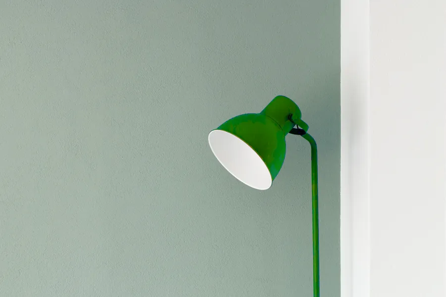
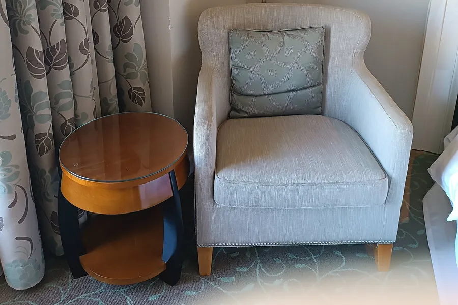

Give things a second home
Sell what you no longer use, and find what you need, from people nearby.
Near you
Like new
Over-ear headphones Laptop, 13 inch 
Green floor lamp 
Light gray armchair
Sell what you no longer use, and find what you need, from people nearby.
Near you

